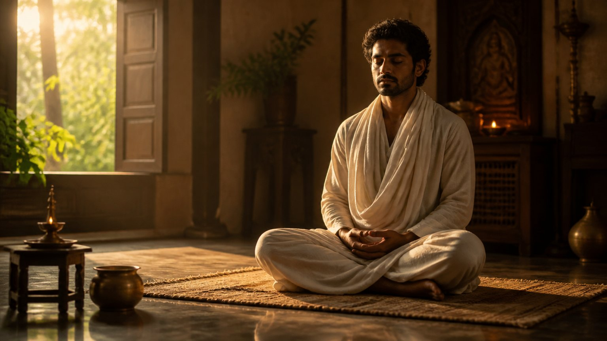
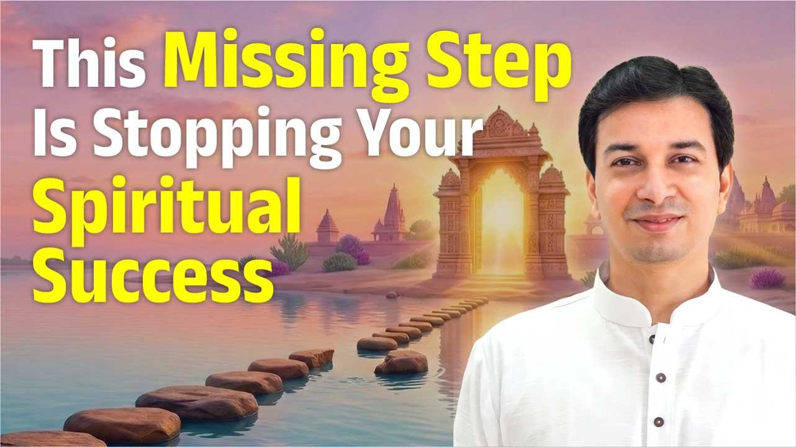

आपने प्रवचन सुने, ग्रंथ पढ़े, शायद भगवद्गीता भी किसी गुरु से समझी। फिर भी भीतर कुछ बदलता क्यों नहीं? आचार्य उपेंद्र जी इसका उत्तर एक प्राचीन क्रम में देते हैं: श्रवण, मनन और निदिध्यासन।
ये तीन कृतियाँ हैं जो हर साधक को करनी पड़ती हैं। और अक्सर हम इनमें से किसी एक को अधूरा छोड़कर अगली पर कूद जाते हैं।
संक्षेप में, श्रवण मनन निदिध्यासन साधना की तीन सीढ़ियाँ हैं। श्रवण तब पूरा होता है जब आप गुरु की बात बिंदुवार दोहरा सकें; मनन तब, जब कोई संदेह शेष न रहे; और निदिध्यासन विश्वास को अनुभव में बदलता है, जिसके लिए तपस्या और योग्यता चाहिए। किसी एक सीढ़ी को अधूरा छोड़ें, तो साधना रुक जाती है।
श्रुति: जो सुनकर ग्रहण किया गया
पहली कृति है श्रवण (listening)। श्रवण से ही श्रुति शब्द आता है, और अपने वेदों को श्रुति कहा गया है।
ध्यान दीजिए, यहाँ पढ़ने-लिखने की बात ही नहीं है। गुरु बोलते थे, शिष्य सुनकर ग्रहण करता था। इसीलिए वेद श्रुति कहलाए।
हम पूजा के संकल्प में बोलते हैं:
श्रुतिस्मृतिपुराणोक्तफलप्राप्त्यर्थं
"श्रुति, स्मृति और पुराणों में कहे गए फल की प्राप्ति के लिए।"
(पूजा का संकल्प वाक्य)
यहाँ स्मृति (memory, remembered tradition) वह है जो स्मरण में रह चुका है, जैसे मनुस्मृति। पहले घटी घटनाओं के आधार पर नियम बनते हैं, जैसे कायदे-कानून। और पुराण वह है जो पहले था और आज भी लागू होता है।
श्रवण कब पूरा होता है?
यहाँ आचार्य जी एक सीधा प्रश्न पूछते हैं: श्रवण समाप्त कहाँ होता है?
किसी गुरु ने आपको गीता समझाई। क्या सौ में से सौ बातें पहली बार में मन में बैठ गईं? यदि आपने केवल दस प्रतिशत ग्रहण किया, तो श्रवण भी दस प्रतिशत ही हुआ।
इसीलिए शास्त्र कहते हैं कि ग्यारह बार, सात बार पारायण (पूरे ग्रंथ का क्रमशः पाठ) करो। हर बार वही चीज़ पढ़ने पर आपकी चेतना (consciousness) का स्तर एक सीढ़ी ऊपर जाता है।
आचार्य जी पूछते हैं कि जब श्रवण ही पूरा नहीं हुआ, तो मनन किस पर करोगे?
तो श्रवण कब पूरा होता है? जब आप अपने गुरु की बात बिंदुवार या शब्दशः दोहरा सकें। शब्द न सही, तो गुरु के बोलने का मूल आशय जब सौ प्रतिशत आपका हो जाए।
इसके लिए ग्यारह पारायण लगें तो ग्यारह, सौ लगें तो सौ।
जिस ग्रंथ या शिक्षा को आप "जानते" हैं, क्या आप उसे बिंदुवार किसी को समझा सकते हैं?
मनन: "मुझे विश्वास नहीं होता" से आगे
मान लीजिए आप गुरु के शब्द ज्यों के त्यों दोहरा सकते हैं। अब तुरंत एक नई समस्या आती है: "गुरुजी, मैं जानता हूँ आप क्या कहना चाहते हैं, पर मुझे विश्वास नहीं होता।"
क्या सच में इस साधना से इतना फल आता है? यह करने से ऐसा होता है?
यहीं मनन (reflection, contemplation) की ज़रूरत है। मनन का अर्थ है:
- अन्य ग्रंथ पढ़ना, पुस्तकालय जाना
- दूसरों के अनुभव देखना कि उन्हें कैसा फल मिला
- अपने संदेह गुरु से पूछना
मनन कब समाप्त होता है? जब कोई संदेह शेष न रहे। जब आप कह सकें, "हाँ, यह साधना करने से यह फल आता है, गणपति ऐसे ही हैं, मुझे अब कोई शंका नहीं।"
निदिध्यासन: वह सीढ़ी जो अक्सर छूट जाती है
अब तीसरी समस्या: "आप जो कहते हैं, मुझे उस पर विश्वास है, पर मुझे उसका अनुभव नहीं होता।"
स्वामी जी को अनुभूति हो गई, उस महापुरुष को हो गई, उस राजा को हो गई। मुझे कैसे होगी?
यहीं से निदिध्यासन आरंभ होता है, यानी जो जाना और माना, उसे जीवन में उतारना (deep application, sustained practice)। प्रश्न सीधा है: जिन्होंने किया था, क्या आप वैसा कर पाओगे?

"हम बुद्धिजीवी हैं": चिकित्सकों का प्रश्न
आचार्य जी ने जब उपचार (हीलिंग) की विधियाँ आरंभ कीं, तो कुछ चिकित्सक आए। उन्होंने कहा, "हम बुद्धिजीवी हैं। क्या यह कोई चमत्कार है, या इसकी कोई प्रक्रिया है जिसे हम भी दोहरा सकें?"
आचार्य जी का उत्तर था: हाँ, ज़रूर। आप भी अभ्यास कर सकते हैं। पर आपको भी वैसी ही तपस्या करनी होगी और उसकी योग्यता प्राप्त करनी होगी।
जैसे कोई भी चिकित्सा का अभ्यास कर सकता है, पर कब? जब वह एमबीबीएस की उपाधि पास कर ले। ऐसा नहीं कि "मैं तो कैसे भी अभ्यास कर लूँगा।"
उसी तरह उन्हें भी आचार्य जी जैसी तपस्या करनी होगी और उसमें योग्यता प्राप्त करनी होगी, तभी वे भी यह कर पाएँगे।
क्या आप साधना से वह फल चाहते हैं जिसकी योग्यता अभी आपने अर्जित ही नहीं की?
अनुभूति सत्य है या कल्पना?
निदिध्यासन में कुछ अनुभव होने लगते हैं। पर हर अनुभव सत्य नहीं होता। वह भ्रम (hallucination) भी हो सकता है, यानी आपके अपने मन की कल्पना।
किसी को आँख बंद करते ही प्रकाश दिखता है, किसी को भगवान दिखते हैं, किसी को सुगंध आती है। आचार्य जी कहते हैं, ये सब कुछ नहीं होता, इसे तन्मात्रा (सूक्ष्म इंद्रिय-अनुभव) कहा जाता है।
तो अनुभूति को सत्य कैसे मानें? आचार्य जी तीन कसौटियाँ देते हैं:
- १शास्त्र में प्रमाण: जिस परंपरा का गुरु पालन करते हैं, उसके शास्त्रों में उस अनुभूति का वर्णन हो।
- २पूर्व के गुरुओं से मेल: पहले के समाधिस्थ गुरुओं या ऋषि-मुनियों को वह स्थिति आ चुकी हो, और आपका अनुभव उससे मेल खाए।
- ३जीवित गुरु का प्रमाण: आपके जीवित गुरु उसे प्रमाणित करें।
जब ये तीनों चीज़ें होती हैं, तभी हमारी अनुभूति सत्य मानी जाती है।
चाहे वह छोटी सी हीलिंग हो, कोई महान सिद्धि हो, या मुक्ति ही क्यों न हो, सत्य की परख इन्हीं तीन कसौटियों से होती है।
मुख्य बातें
- साधना की तीन कृतियाँ हैं: श्रवण, मनन और निदिध्यासन, और इनका क्रम महत्वपूर्ण है।
- श्रवण तब पूरा होता है जब आप गुरु की बात बिंदुवार या शब्दशः दोहरा सकें; इसके लिए बार-बार पारायण करना पड़ता है।
- मनन तब पूरा होता है जब कोई संदेह शेष न रहे; इसके लिए अध्ययन, दूसरों के अनुभव और गुरु से प्रश्न सहायक हैं।
- निदिध्यासन विश्वास को अनुभव में बदलता है, पर इसके लिए तपस्या और योग्यता चाहिए, जैसे चिकित्सक को उपाधि।
- प्रकाश, दर्शन या सुगंध जैसे अनुभव तन्मात्रा या मन की कल्पना हो सकते हैं।
- अनुभूति तभी सत्य है जब वह शास्त्र, पूर्व के समाधिस्थ गुरुओं और जीवित गुरु, तीनों की कसौटी पर खरी उतरे।

आगे पढ़ें

आप कितने सत्संग सुन चुके हैं? और उनमें से कितनी बातें सच में आपके जीवन में उतरीं? आचार्य उपेंद्र जी इस छोटे से प्रवचन में एक ऐसा दर्पण दिखाते हैं…

क्या गुरु के बिना शास्त्र समझे जा सकते हैं? आचार्य जी की यह कथा बताती है: नहीं। शास्त्र संकेतों में बोलते हैं, और अक्षरशः पढ़ने पर वे अंधश्रद्धा तक…

जब जीवन में कष्ट आता है, तो हम में से अधिकतर लोग किसी गुरु, किसी ज्योतिषी या किसी मार्गदर्शक के पास जाते हैं। पर क्या आपने कभी सोचा है कि आप वहां…